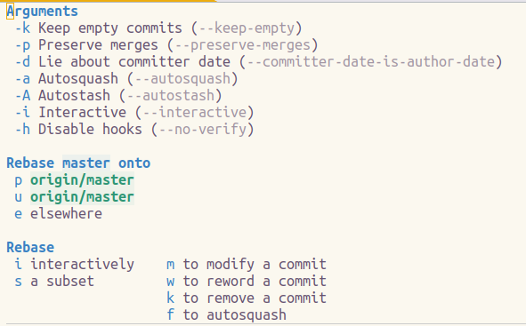

Interactive Rebasing
Magit provides an excellent tool to change history using interactive rebasing. By navigating back through the commit history changes can be made to commits or simply updating commit messages for commits that are not the current HEAD.
During the interactive rebasing you can use other Git commands such as Amend, Write and Extend to update commits anywhere in the history.
Before rebasing, any uncommitted changes should be stashed or deleted.

Starting Rebase
SPC g s to open the Magit Status buffer and find the commit where the rebase should start.
Either navigate to the Recent Commits section and TAB to show the list of commits, or use l l to open the commit history log.
Move the cursor to the commit to rebase from, the earliest commit to be changed.
Modifying a commit during rebase
r to start rebase
m to modify the commit
s to stage any new content to be added to the commit, if required.
u to mark hunks or regions to unstage in the original commit, using v to select regions within hunks if required.
z w to stash the working copy of any unstaged changes, or x to delete those unstaged changes from the working copy
c a to amend the commit with the changes
, , to confirm the changes and make the new commit
r r to continue the rebase
P p to push the changes to a remote repository, or P -f p for a forced push with lease if rebased commits were already pushed to that repository
z p to unstash any changes that were stashed during or before the rebase.
work in progress, sorry
Interactive rebase to modifying a commit other than HEAD
can be broken down into three steps:
- Temporarily make that other commit (A) the HEAD.
- Modify the HEAD (as described above), resulting in commit A'.
- Tell Git to reapply the commits that followed A, but on top of A'.
This can be done using an interactive rebase. Type r to show the rebase popup. Then type m to invoke the "edit a commit" rebase variant. A buffer with recent commits appears. Move to the commit you want to modify and type C-c C-c to select it. Git then rewinds history to that commit and shows information about the ongoing rebase in the status buffer.
Modify HEAD using the amend tools
r r to confirm the changes are complete.
If A' and B conflict then rebase will stop at B and you have to resolve the conflict. After you have done so press r r to continue.
If you know that your changes to A will result in conflicts with B, then proceed as describe above, otherwise use the following approach.
Git allows creating "fixup commits" using git commit --fixup A. This creates a new commit, which records changes which "should have been made in another commit". That commit becomes the new HEAD. There also exists a --squash variant. For information about the differences see the git-commit man page.
Rebase with autosquash
To actually combine the A commit and the new commit A' and then reapply B on top of that you have to use rebase. Magit provides a convenient command for doing so on r f.
The main difference to the above approach is that here we first create a new commit and then we rebase to combine that with the "target" and reapply B. Above we began with rebasing instead of committing.
In Magit both the --fixup and the --squash variants are available from the commit popup, on f and s. But Magit also provides "instant" variants of the fixup and squash commands on F and S. These variants create a new commit like the "non-instant" variants, but then they instantly combine the fixup commit with the target commit using rebase, without you having to invoke another command.
"Instant fixup" (c F) is essentially the same thing as "extend HEAD" (c e), except that it works for any commit, not just HEAD.